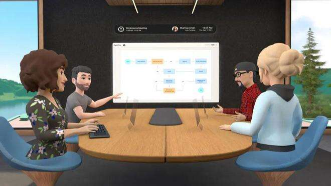
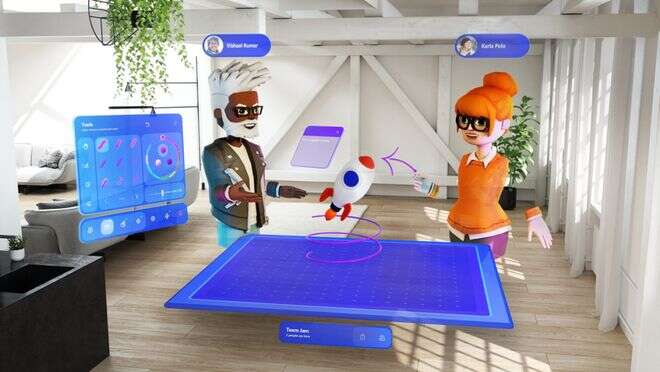

“在未来两三年内，我预测大多数虚拟会议将从2D图像转向元宇宙，一个有虚拟形象的3D空间。 ”比尔·盖茨2021年年底在他的博客文章中发出了一个重要的预言。
面对这一预言，很多专家包括未来学家都持怀疑态度，认为盖茨的时间表可能超前了，并直言“元宇宙有可能在大约10年后成为占主导地位的虚拟会议系统”。
令人意想不到是，盖茨预言分元宇宙会议系统在2022年纷纷落地。
7月24日中国天宫站首个实验舱——“问天”成功发射。在“问天”实验舱发射直播中，东方卫视主持人与各位UP主在中国移动（浙江）创新研究院的元宇宙世界内进行太空生活的交流。
HTCV2EC开发者大会在VR协作平台Engage上展开，有超过1000人使用HTCVive虚拟现实头盔参与大会，像这样标注为“元宇宙”的行业会议在不少科技企业中落地。
海比研究院认为，元宇宙的概念已经存在一段时间了，只用于在线游戏等。但是，除了在线休闲活动外，当远程工作成为一种新常态时，元宇宙提供了一个改变游戏规则的机会，那就是以全新的方式举行会议并与远程团队协作。
除了游戏，元宇宙最适合开会
元宇宙是个筐，什么都能往里装。 虽然元宇宙的概念大热，但是公众普遍认为，元宇宙距离我们还挺远，市面上的元宇宙大多数都是炒作，或者噱头，只不过是背靠元宇宙大树乘凉而已。
然而，元宇宙会议系统却脱颖而出，成为新冠疫情下远程办公升级的新选择。
随着新冠疫情在全球的蔓延，远程会议市场迎来了大爆发。远程工作正在成为一种新常态，因此在Zoom、Meet和Teams，或者腾讯会议、钉钉、飞书等平台上举行虚拟会议迅速成为新常态。
但是，任何参加过此类会议的人都亲身体验过它的许多不便。例如，通常看不到彼此，并且伴随着无数的干扰。人们更喜欢聆听，很少主动发言。互动比较少，交流的效率也并不高等。
专家认为，造成这一现象的原因是目前的远程会议临场感、沉浸感大量缺失，大大降低了与会者的体验感，从而影响会议的整体效果，甚至业务创新。
这样的现实也在传递一个信号，即远程会议在经历了疫情后的市场大爆发后，已经从大规模普及阶段，到了需要提升体验感的下一站。
而在元宇宙兴起的背景下，虚拟现实与远程会议就有了天然的一个结合点。
2022年元宇宙会议系统平台不断涌现。Facebook致力于发展元宇宙，甚至将公司的名称改为Meta，还通过HorizonWorkrooms将元宇宙带入工作场所。
而微软Meshfor Microsoft Teams平台，则利用众多新技术如虚拟现实VR、增强现实AR和全息图，提供了一个元宇宙的虚拟会议平台。
很多初创公司也加入市场，提供平台，帮助用户在虚拟空间中举办活动，提高体验。
元宇宙会议系统众多创新点，着力改善参加会议人员的体验。
2021年底，盖茨预计，借助元宇宙，会议系统将从二维发展到三维；人们可以通过增强现实（AR）耳机和数字化身（虚拟人）参加会议；同时元宇宙会议系统会冲破科技行业界限，让更多的其他公司参与等。
目前元宇宙会议系统的发展，基本上验证了比尔·盖茨的预言。
首先，在元宇宙会议系统中，用户以自己的虚拟头像登录，并前往元宇宙会议室，与其他团队成员会面，就好像在办公室的物理会议空间一样。
使用自己的一个“化身”（也就是现在比较流行的虚拟数字人）参会发言，同时还可以搭配身体语言和微表情来传递信息。
在Meta研究院发表的一份报告中就认为，采用虚拟数字人的虚拟会议，更贴近自然情形下的人类交流。
目前的技术已经可以让使用者的虚拟形象实时地反映使用者的表情和动作。
其次，为了让远程员工体验元宇宙会议，需要使用某种形式的VR护目镜（如Oculus）来获得肢体语言、表情和语音的完整体验。
通过佩戴AR/VR等设备，以更具沉浸感的方式，与同事互动，与客户沟通和建立业务，让人们更真切地感受到处于真实的物理房间内。
第三，元宇宙中会议的一个主要问题是安全性。在大流行开始时，Zoom经历了严格的审查，因为电话会议和在线教室容易被黑客劫持。
元宇宙会议预计会进行与业务相关的机密对话。组织如何能够管理其会议，以便只有受邀者才能加入？这些问题也会出现，并被解决。

元宇宙会议的天然优势开始显现
在元宇宙中举办团队会议的优势逐渐显现，海比研究院总结形成了其5大优势！
第一，完全自由地自定义自己的虚拟空间。根据目前已经商业化的元宇宙会议系统，用户可以创建自己的虚拟会议空间。其中包括：
创建入口，可以在虚拟活动的大厅中添加一些动画灯光和背景旋律，使您的虚拟活动的入口就像面对面一样。
可以布置会场，您还可以创建各种动态横幅广告，以提高品牌知名度。您可以共享多个信息图表，包括图像、GIF、视频等。
第二，通过集成获得新的超能力。参加会议的人可以创建自己的头像或者虚拟人。它是人类的电子图像，可以创建与人完全相同的内容，选择发型、衣服、鞋子等，以使其与您相似。
您还可以获得1：1或群组实时聊天、音频和视频通话选项，与观众、演讲者、主持人、赞助商、展位代表以及元宇宙活动中的所有参与者建立联系和沟通。
您可以获得外部通信集成，与您常用的系统如微信、Whatsapp、Zoom会议集成，体验更简单的交互。
第三，通过使用元宇宙中的AI技术，提高生产力。顶级虚拟活动平台提供与AI集成的元宇宙空间，您可以使用各种最新功能改善体验。
一方面，主持人可以从虚拟事件平台获得详细的分析，使用AI技术进行数据跟踪。此外，您可以在虚拟活动中了解最喜欢和最不喜欢的工具。
另一方面，参会人员可以获得基于AI的匹配工具，如在元界团队会议中结交朋友，与具有相似兴趣的与会者交流等。
第四，鼓励与会者积极参与。元宇宙会议系统通过提供各种工具，鼓励参会者互动，并让参会者完整参加会议。
顶级虚拟活动平台会提供喜欢、鼓掌、嘘声等各种表情符号，可以使用多个表情符号来响应演讲者会话，创造了一种面对面的体验。
您还可以通过文档库提供各种小册子、传单、文档、pdf和其他基本文件，与会者可以使用顶级虚拟活动平台下载或者访问。
第五，轻松娱乐，您可以创建各种会话，使您的虚拟活动具有娱乐性。顶级虚拟活动平台提供游戏化、排行榜、AR照相亭等功能。
您可以在虚拟活动中获得多个AR/ VR游戏。所有与会者都可以毫无困难地在元宇宙空间中享受游戏。
排行榜等功能可以为您的虚拟活动增加一些竞争。
您可以使用AR照相亭单击各种自拍照。它提供了许多背景，您可以在图片中使用。另外，您可以创建一个gif，连续拍摄大量照片。

海比研究院也分析了人们喜欢尝试元宇宙会议的几个原因。
一是创立一个所有员工共有的虚拟空间。即使每个人都在办公室工作，他们也可能处在多个城市或不同办公空间。虚拟空间为每个人创造了一种共同的体验，无论他们是在家工作还是在办公室工作。公司还可以将客户带入这些空间，以减少旅行。
Forrester的一份关于虚拟办公室的报告列出了作为信息交流场所的好处之一，可以取代面对面的互动。报告称，虚拟办公空间可以营造出一种物理存在感，从而平滑完成信息交换。
报告称，共享虚拟空间也可以建立和加强共享文化。一个精心设计的虚拟空间可以创造归属感，建立行为规范并加强同事之间的信任。
二是员工或者团队愿意尝试进入一个虚拟的空间。员工体验是公司越来越重视的问题，从调查中可以清楚地看出，人们希望在工作时间和地点方面具有灵活性。创建虚拟共享空间是将人们聚集在一起并同时提供灵活性的一种方式。
创建虚拟工作空间是一种以可衡量的方式更改工作流程的方法。员工愿意尝试一些与往常不同的新事物。
埃森哲于2020年开始其虚拟现实实验。该公司为25个国家的150名董事总经理建造了一个虚拟休息室，发现“头像和逼真的会议空间的结合提供了更深层次的联系感”，并允许人们在自己的办公室享受面对面的时间。该公司现在有一个“N楼”来创造共享的员工体验。
三是创造了一个公平的竞争环境。尽管不少公司开始倡导家居办公与远程办公等新的混合工作方式，但是大多数企业仍然会回到传统的办公室工作方式。这意味着办公室中人员与经理每天面对面的机会更多，而远程人员的机会更少。
创造公平竞争环境的一种方法是为每个人创造一个平等的空间。选择远程工作的人应该拥有与面对面员工相同的所有资源，包括晋升和与经理共度时光。建立共享空间还可以支持多样性、公平性和包容性目标。